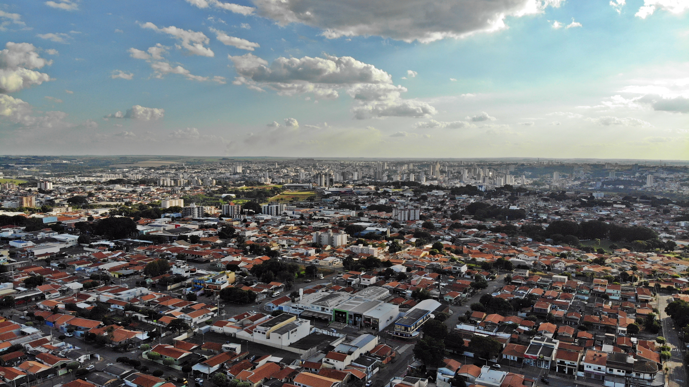
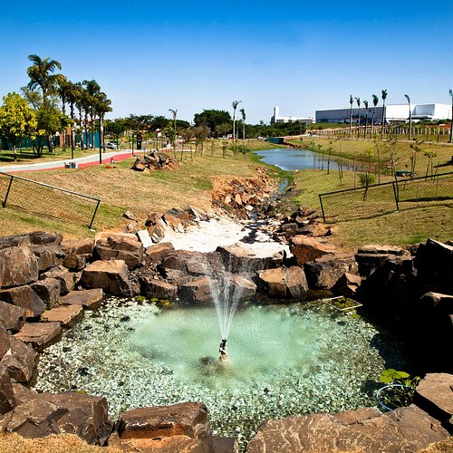
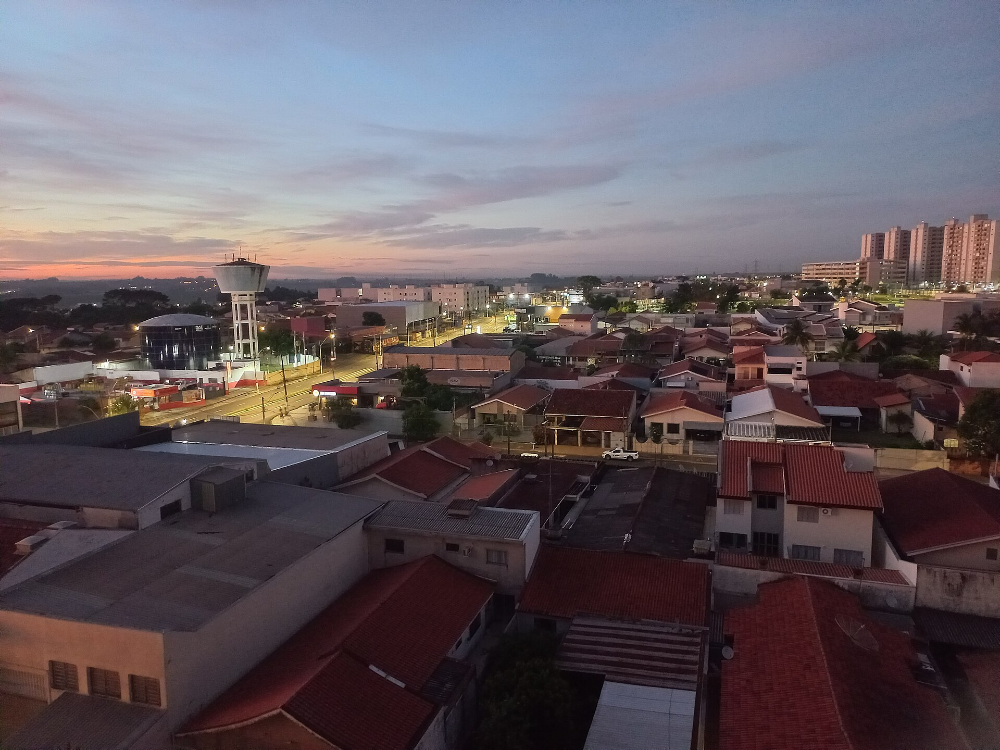
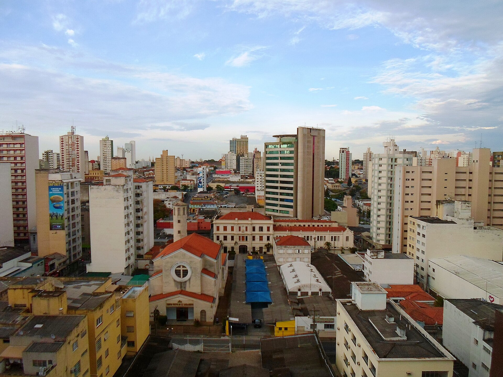
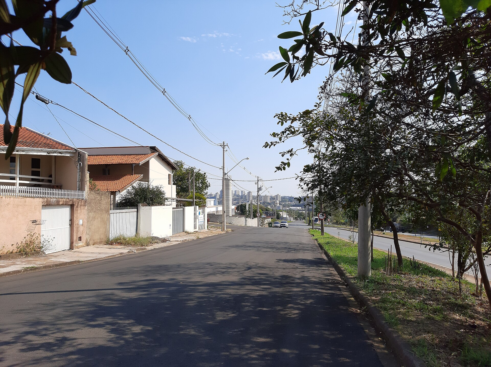
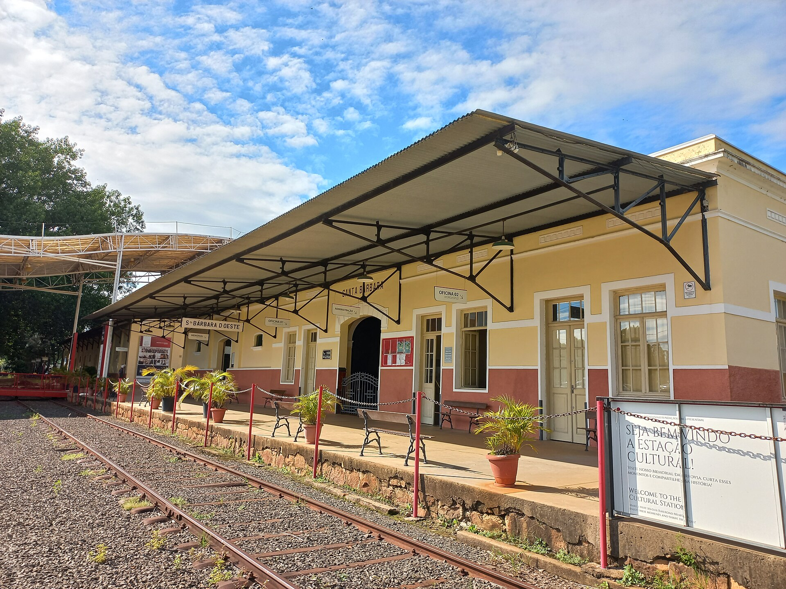
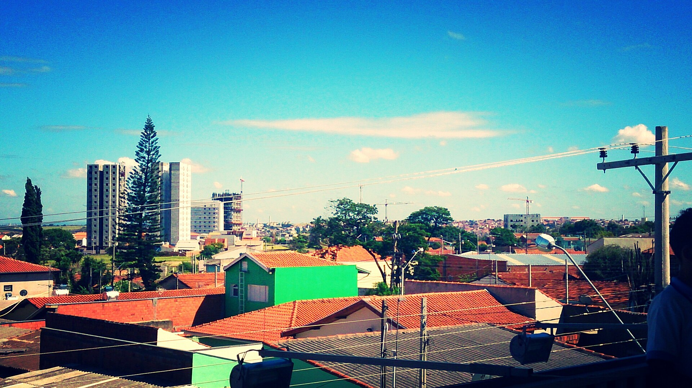

Americana
Uma cidade de tradição e movimento, com parques, espaços culturais e pontos conhecidos ao longo da Avenida Brasil.

Tradição, vida urbana e espaços de lazer no interior paulista.

Uma cidade acolhedora, com áreas verdes e ritmo tranquilo.

História, cultura e espaços públicos para aproveitar a cidade.

Desenvolvimento e qualidade de vida em uma região conectada.

Uma metrópole dinâmica, com cultura e muitos lugares para conhecer.
Cinco cidades da região, cada uma com seu próprio jeito de viver, passear e descobrir.
Uma cidade de tradição e movimento, com parques, espaços culturais e pontos conhecidos ao longo da Avenida Brasil.
Um município próximo, conhecido por suas áreas verdes e por espaços voltados à natureza e ao passeio ao ar livre.
História local, atividades culturais e parques fazem parte das opções para moradores e visitantes.
Uma cidade em constante desenvolvimento, com áreas públicas e atrações para diferentes momentos do dia.
Centro regional de grande porte, com opções de lazer, cultura, parques e passeios urbanos.
Lugares para descansar, encontrar pessoas e participar da vida da cidade.
No Centro da cidade, a praça reúne espaços de convivência e fica próxima à Biblioteca Municipal.
Conhecer AmericanaUm espaço tradicional de encontro que também recebe atividades e eventos da cidade.
Ver programação da cidadeAlgumas ideias de passeio para descobrir a região.

Uma das avenidas mais conhecidas de Americana, com movimento e lugares de interesse ao longo do trajeto.
Ver no mapa
Um passeio entre jardins, coleções de plantas e paisagens ao ar livre, em Nova Odessa.
Ver no mapa
Área ao ar livre com espaços para caminhar, descansar e aproveitar o dia.
Ver no mapaParque com áreas de lazer, pista de caminhada e atrações para toda a família.
Conhecer o parqueImagens de Americana, Campinas, Nova Odessa, Santa Bárbara d'Oeste e Hortolândia.





Veja a localização de Americana e das cidades próximas.